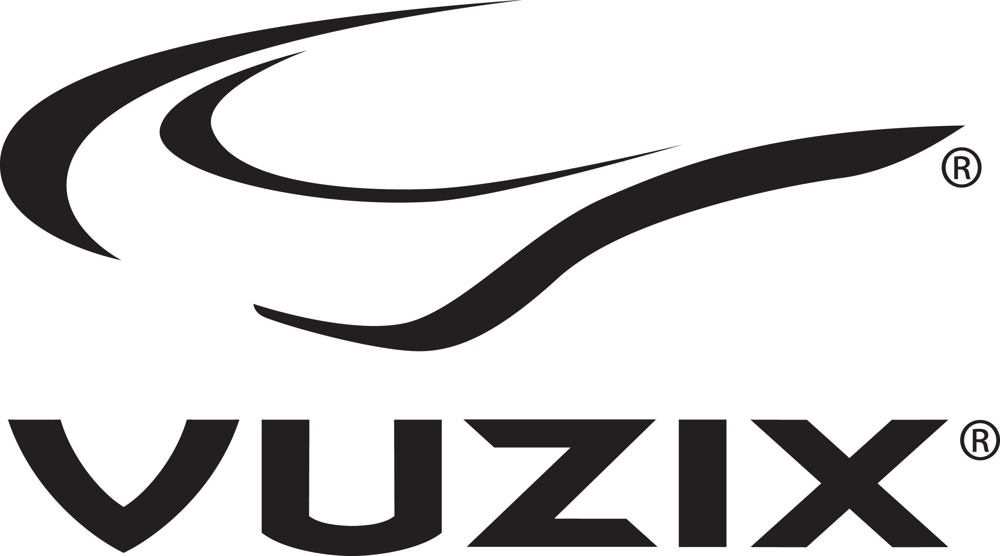
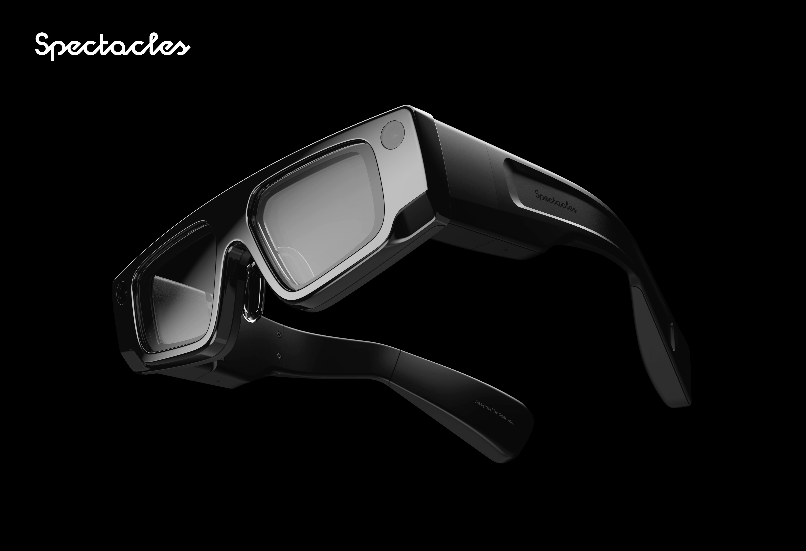
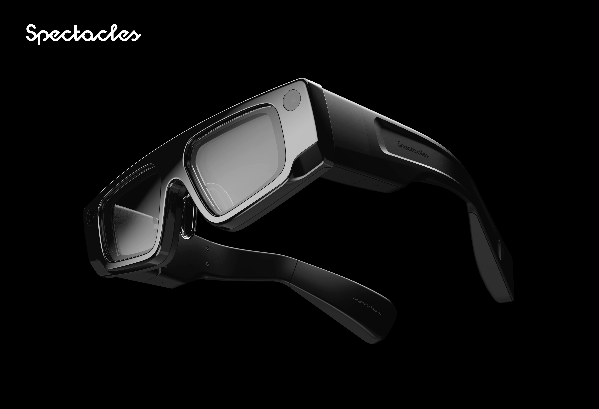
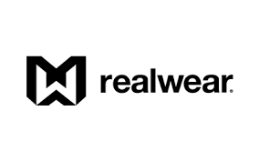

目標市場與客戶類型
我們專注於與全球領先的科技品牌和行業解決方案提供商合作，共同開拓AR+AI智能眼鏡的廣闊市場。
北美市場潛在合作夥伴：


 

例如，為Vuzix提供企業級AR解決方案的定制開發與生產；與Magic Leap在空間計算領域探索合作；為Microsoft HoloLens系列提供代工生產；為Snap Inc.開發社交娛樂眼鏡。
歐洲市場潛在合作夥伴：


例如，與RealWear合作生產工業級頭戴設備，滿足特殊工業環境需求；為Nreal等消費級AR眼鏡品牌提供代工，助力其拓展歐美市場。
(注：以上列舉公司均為本投資方案中提及的目標代工客戶類型或潛在合作方向，展示我司服務能力與市場定位。)